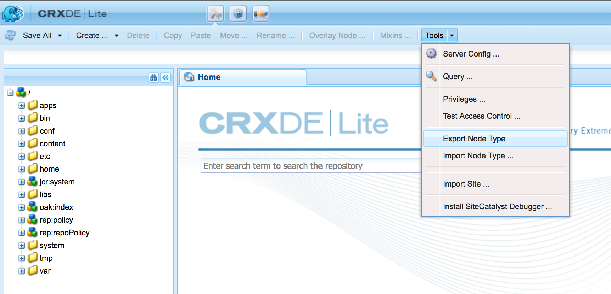

Using oakpal-maven-plugin
1. Add the plugin to your package project
Add the plugin to your ui.apps / "content-package" type pom.xml
<plugin>
<groupId>net.adamcin.oakpal</groupId>
<artifactId>oakpal-maven-plugin</artifactId>
<version>0.10.0-SNAPSHOT</version>
<configuration>
</configuration>
<executions>
<execution>
<goals>
<goal>scan</goal>
</goals>
</execution>
</executions>
</plugin>
2. Export your platform nodetypes
To properly prepare the scan for your code package, you might first need to export the Compact NodeType Definition (CND) from your Commercial Oak-based Product and make it available to the plugin.
In Adobe AEM development, it is as simple as visiting crx/de lite on a representative installation, such as a properly patched local quickstart environment.
Click Tools -> Export Node Type.

You will see the generated CND content rendered directly.
<'sling'='http://sling.apache.org/jcr/sling/1.0'> <'nt'='http://www.jcp.org/jcr/nt/1.0'> <'cq'='http://www.day.com/jcr/cq/1.0'> <'oak'='http://jackrabbit.apache.org/oak/ns/1.0'> <'jcr'='http://www.jcp.org/jcr/1.0'> <'mix'='http://www.jcp.org/jcr/mix/1.0'> <'granite'='http://www.adobe.com/jcr/granite/1.0'> <'rep'='internal'> <'xmp'='http://ns.adobe.com/xap/1.0/'> <'social'='http://www.adobe.com/social/1.0'> <'dam'='http://www.day.com/dam/1.0'> <'oauth'='http://oauth.net/'> <'rdf'='http://www.w3.org/1999/02/22-rdf-syntax-ns#'> <'vlt'='http://www.day.com/jcr/vault/1.0'> <'slingevent'='http://sling.apache.org/jcr/event/1.0'> <'fd'='http://www.adobe.com/aemfd/fd/1.0'> [sling:OrderedFolder] > sling:Folder orderable + * (nt:base) = sling:OrderedFolder version [cq:OwnerTaggable] > cq:Taggable mixin [oak:Unstructured] - * (undefined) multiple - * (undefined) + * (nt:base) = oak:Unstructured version ...
Save the output as a file under src/test/resources in your ui.apps module and add the <cndNames>/<cndName> parameter to your oakpal-maven-plugin configuration with the path to the file.
<plugin>
<groupId>net.adamcin.oakpal</groupId>
<artifactId>oakpal-maven-plugin</artifactId>
<version>0.10.0-SNAPSHOT</version>
<configuration>
<cndNames>
<cndName>[your-cnd-filename]</cndName>
</cndNames>
</configuration>
<executions>
<execution>
<goals>
<goal>scan</goal>
</goals>
</execution>
</executions>
</plugin>
3. Write a Script Check
Follow these instructions to create a script check for your package build.